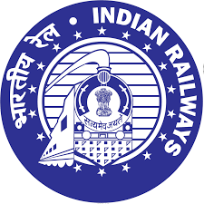

<mat-toolbar color="primary">
  <mat-toolbar-row>
    <button mat-button routerLink="/" > Indian Railways </button>
    
    <span class="spacer"></span>
    
    <button mat-button routerLink="/register">Register</button>
    <button mat-button routerLink="/login">Login</button>
  </mat-toolbar-row>
</mat-toolbar>
